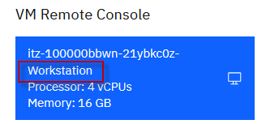
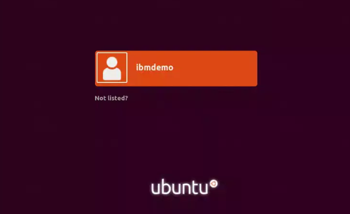
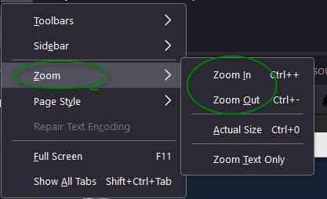

Discover Liberty
In this lab, you will explore the Liberty server configuration, installing applications onto Liberty, updating the server configurations, and updating an application.
As you explore Liberty, you will first use the WebSphere Developer Tools for Eclipse. Then, you will explore Liberty using the command line. Finally, you will be introduced to mode advanced configurations using jvm.options, bootstrap.properties, Liberty built-in variables, and logging and tracing.
 |
TIP: Liberty is pre-installed on the VM environment provided. {LAB_HOME} refers to: /home/ibmdemo/Student/WLP_21.0.0.3 |
TIP: To reduce typing or copy & past of commands, you can find the related code snippets or commands in the VMWare image in the directory:
/home/ibmdemo/Student/lab-files/CodeSnippets/Bootcamp_Lab2_discover_CodeSnippets.txt

Accessing the lab environment
If you are doing this lab as part of an instructor led workshop (virtual or face to face), an environment has already been provisioned for you. The instructor will provide the details for accessing the lab environment.
Otherwise, you will need to reserve an environment for the lab. You can obtain one here. Follow the on-screen instructions for the “Reserve now” option.
https://techzone.ibm.com/my/reservations/create/60da2c20e2cb7a001f656575
The lab environment contains one (1) Linux VM, named Workstation.

The Ubuntu Linux Workstation VM has the following software installed for the lab:
- Application Project with Liberty
-
Maven 3.6.0
-
Access the lab environment from your web browser.
A Published Service is configured to provide access to the Workstation VM through the noVNC interface for the lab environment.
a. When the environment is provisioned, right-mouse click on the Published Service link and open the URL in a new private or incognito browser window, as described below:
- If using Google Chrome browser, select "Open link in incognito window" from the context menu.
- If using Firefox browser, select "Open link in new private window" from the context menu.

b. Click on the "vnc.html" link to open the lab environment through the noVNC interface.

c. Click the Connect button

d. Enter the password as: passw0rd. Then click the Send Credentials button to access the lab environment.
Note: That is a numeric zero in passw0rd

-
Login with ibmdemo ID.
a. Click on the “ibmdemo” icon on the Ubuntu screen.

b. When prompted for the password for “ibmdemo” user, enter “passw0rd” as the password:
Password: passw0rd (lowercase with a zero instead of the o)

-
Once you access the Student VM through the published service, you will see the Desktop, which contains all the programs that you will be using (browsers, terminal, etc.)
Tips for working the in lab environment
-
You can use your Browsers zoom in and zoom out options to resize the virtual desktop to fit your screen.
The examples below are using Firefox and Chrome browsers.
- Firefox example:

- Chrome example:

-
You can copy / paste text from the lab guide into the lab environment using the clipboard in the noVNC viewer.
a. Copy the text from the lab guide that you want to paste into the lab environment
b. Click the Clipboard icon and paste the text into the noVNC clipboard

c. Paste the tect into the VM, such as to a terminal window, browser window, etc.
d. Click on the clipboard icon agian to close the clipboard
NOTE: Sometimes pasting into a Terminal window in the VM does not work consistently. In this case you might try again, or paste the text into a Text Editor in the VM, and then paste it into the Terminal window in the VM.
-
An alternative to using the noVNC Copy / Paste option, you may considr openeing the lab guide in a web browser inside of the VM. Using this method, you can easily copy / paste text from the lab guide wihout having to use the noVNC clipboard.
 |
Important: Click CANCEL…. If, at any time during the lab, you get a pop-up asking to install updated software onto the Ubuntu VM. The one we experience is an update available for VS Code. CLICK CANCEL!
|

Explore Liberty via WDT
Note: proceed directly to section 3 if you only want to use the command line.
Setup Liberty for the lab
-
Copy the Liberty server configuration, used in this lab, to the Liberty usr/servers directory.
a. Open a new Terminal window
b. Run the script to setup the Liberty server configuration used in this lab.
/home/ibmdemo/Student/labs/lab2/lab2-setup.sh
Ensure eclipse is started and you are in the correct workspace
-
If Eclipse is not already started, start it now
a. Use the File Explorer to navigate to the directory
Home > Student > WLP_21.0.0.3 > wdt > eclipseb. Double-click on the eclipse executable to start Eclipse.

c. When the Eclipse launcher prompts you to select a workspace, enter the following directory. Then click the Launch button.
/home/ibmdemo/Student/labs/lab2/workspace
Exploring the Liberty Server
-
Start the server in eclipse.
a. From the Servers view, select your labServer instance and click the Start the server button (
 ).
). Alternatively, you can also right-click the server name and choose the Start option from the context menu.
b. Switch to the Console view if necessary. Look at the messages to see how fast your server starts!

Explore using the WDT to make changes to the lab server configuration
-
Open the Lab Server configuration using the WDT server configuration editor
a. In the Servers view, double-click on your labServer server to open the server Overview.

b. Expand the Publishing section and notice that the server is set to automatically detect and publish changes. Keep this default setting.


-
In this exercise, you will be deploying a simple servlet application, so try enabling the servlet feature on this server.
a. On the Overview page, locate the Liberty Server Settings section
b. Click the Open server configuration link to open the server.xml editor.
Note: To better see the content in Eclipse, you may need to resize the Eclipse views, or increase the size of the Eclipse desktop app

c. If the Source view of the server.xml file is displayed, switch to the Design view in the server configuration editor, by clicking on the "Design” tab in the editor pane
d. Start by providing a meaningful description for your server, such as “Liberty server for labs”.

e. To add a feature, such as servlet-4.0, go back in the Configuration Structure area, and exand it, if necessary, and note the Feature Manager configuration entry.
In this lab, the Feature Manager has already been added to the configuration
f. Review the Feature Manager settings by clicking on the “Feature Manager” to view the list of features already configured.
Notice that the jsp-2.3 and the loalConnector-1.0 features have already been added to the server configuration.
g. Click the Add button to add a new feature “servlet-4.0”

h. In the pop-up, type servlet to filter to servlet related features. Then select servlet-4.0. Click OK

i. In the server.xml editor, switch to the Source tab at the bottom to see the XML source for this configuration file. You will see that a new featureManager element has been updated to contain the servlet-4.0 feature.

j. Now you have a server that is configured to use the servlet-4.0 feature.
k. Click the Save button (
 ) to
save your changes (or use CTRL+S)
) to
save your changes (or use CTRL+S)
|
TIP: The Sample1 application is a Java Enterprise application that includes a simple Java Servlet class. For the Liberty Server to run the Sample1 application, the servlet feature must be configured in the server.xml file. |
-
Switch to the Console view, located at the bottom of the workbench and review the latest messages. These messages are showing that your Liberty server automatically detected the configuration update, processed the feature that you enabled, and is now listening for incoming requests.
You will notice that the server configuration was automatically updated, and the feature update was completed very quickly. In this example, it was less than one second.
-
Close the server.xml in the editor pane.
-
Close the Liberty Server Overview page in Eclipse
Now you are ready to start working with a sample application that uses the Servlet feature.
Deploying a sample application to Liberty
Import a sample application into Eclipse
-
A simple servlet WAR file has been provided for this exercise; import it into your workbench.
a. In Eclipse, go to File > Import.

b. Expand the Web section, then select WAR file. Click Next.
c. In the WAR file field, select Browse. Navigate to:
/home/ibmdemo/Student/WLP_21.0.0.3/labs/gettingStarted/1_discover_20190416/Sample1.ward. Click Open.
e. Ensure the Target runtime is set to Liberty Runtime
f. Unselect “Add project to an EAR”
g. Click Finish
h. If prompted to open the web perspective, click Open Perspective.
-
Now you have a Sample1 web project in your workspace. Expand it in the Enterprise Explorer view to see the different components of the project.

-
Start the sample application.
a. In the Enterprise Explorer pane, navigate to the SimpleServlet.java as shown below.
Sample1 > src/main/java > wasdev.sample > SimpleServlet.javab. Right-click on SimpleServlet.java.
c. From the context menu, select Run As > Run on Server.
d. In the Run On Server dialog:
-
Verify that Choose an existing server is chosen.
-
Under localhost, select the Liberty Server that you defined earlier. The server should be listed in Started state.
-
Click Finish.
e. After a moment, your application will be installed and started. See the Console pane for the corresponding messages.

-
-
In the main panel of the workbench, a browser opened, pointing to
http://localhost:9080/Sample1/SimpleServlet.
a. If you receive a 404 the first time, try to refresh the browser once the application is completely deployed and started.
b. At this point, you should see the rendered HTML content generated by the simple servlet.
In this section of the lab, you explored how to use the WebSphere Developer Tools (WDT) to start a Liberty Server, modify the server configuration, import a simple Java EE WAR module, and deploy the application to the server from with the development environment.
In the next section, you will explore using WDT to make changes to the application code, and have it hot deployed to the Liberty server, in your development environment, to illustrate a simple, yet robust development experience for Java developers using WDT and Liberty.
Modify the application to see how changes are automatically picked up in the running server.
-
Open the servlet java source code.
a. In the Enterprise Explorer panel, expand the Sample1 project, then go to:
Sample1 > src/main/java > wasdev.sampleb. Double-click the SimpleServlet.java source file to open the Java editor for the servlet.

c. This is the SimpleServlet.java source code
-
Examine the doGet() method in the SimpleServlet.java code
a. This is a very simple servlet with a doGet() method that sends out an HTML snippet string as a response. Your doGet() method will look similar to this (some of the HTML tags might be a little different – that is ok).

-
Modify the application and publish the change.
a. In the doGet() method, Locate the \<h1> heading element of the HTML string, and notice that it contains a font tag to set the color to “green”.
b. Modify this string by changing the text green to purple, so your font tag will look read \<font color=purple>.
html response.getWriter().print( "<html><h1><font color=purple>Simple Servlet ran successfully</font></html>" + "<html>Powered by WebSphere Application Server Liberty</html>");c. Save your changes to the Java source file by either clicking the Save button (
) or using
CTRL+S. -
Recall that your server configuration is setup to automatically detect and publish application changes immediately. By saving the changes to your Java source file, you automatically triggered an application update on the server.
a. To see this, go to the Console view at the bottom of the workbench. The application update started almost immediately after you saved the change to the application, and the update completed in seconds.

-
Access the updated application.
a. Refresh the browser in your workbench to see the application change. The title should now be rendered in purple text.
-
Optionally continue to play around with application modifications and see how quickly those changes are available in the deployed application. Maybe put in some additional text to display on the page, or add extra HTML tags to see formatting changes (you could add a title tag to set the text displayed in the browser title bar, for example, \<head>\<title>Liberty Server\</title>\</head>).
The key is that this edit / publish / debug cycle is very simple and fast!
Modify the server HTTP(s) ports to see that Liberty Serer configuration changes are also automatially picked up in the running server
With Liberty, server configuration changes are monitored, and dynamically updated in the running instance of the server. In this section, you will make some updates to the Liberty server.xml file and observe the dynamic server updates capability in Liberty.
-
Open the server configuration editor.
a. In the Servers view, double-click on the labServer Server Configuration server to open the configuration server.xml editor.
b. Ensure you are in the Design mode by selecting the Design tab on the Server Configuration editor.
-
Select the Web Application: Sample1 item in the Server Configuration and look at its configuration details. From here, you can set basic application parameters, including the context root for the application, and to automatically start the application.

-
Select the Application Monitoring item in the Server Configuration and look at its configuration details. You can see that the monitor polls for changes every 500ms using an mbean trigger.
-
Select the Feature Manager item to see the features that are configured on your server. You added the servlet-4.0 feature because you knew that you were going to be running a servlet application. But the development tools automatically added the localConnector-1.0. feature to your server to support notifications and application updates.
In fact, you would not have needed to add the servlet feature to your server at the beginning at all. The tools would have automatically enabled that feature, based on the content of the application.

-
Change the HTTP port.
Using the default HTTP port (9080) is an easy way to quickly bring up an application, but it is common to want to use a different port. This is an easy thing to change.
a. In the Configuration Structure area, select Server Configuration, then select HTTP Endpoint

b. In the HTTP Endpoint Details area, Change the HTTP Port to 9085.
c. Save your changes to the server configuration (CTRL+S).
-
You can review your full server configuration in the server.xml source file. Back in the server configuration editor, switch to the Source tab at the bottom to view the full XML source for your server configuration.

-
After you saved your configuration changes, the configuration of > your running server was automatically updated. The Console > pane will show that the Sample1 servlet is now available on port > 9085.

-
Now, you can access your sample application using the new port. In the browser in your workbench, change the port from 9080 to 9085 and refresh the application.
Add INFO logging output to console
WebSphere Traditional and Liberty provide the ability to set the logging level to any of the supported log levels defined in the documentation: https://www.ibm.com/docs/en/was-liberty/base?topic=liberty-logging-trace
AUDIT logging enables logging of “Significant event affecting server state or resources”
INFO logging enables of “General information outlining overall task progress”
By default, the Liberty Server has the console log level set to AUDIT.
In this section, you will change the level of log messages written to the console from AUDIT to INFO, which will result in additional logging messages.
You will perform this activity in the server.xml file using the UI. It is also possible to set default logging options in the bootstrap.properties file.
If the logging options are set in the bootstrap.properties file, the logging options will take effect very early in server startup, so it may be useful for debugging server initialization problems.
-
Open the server configuration editor.
a. In the Servers view, double-click on the labServer Server Configuration server to open the configuration server.xml editor.
b. Ensure you are in the Design mode by selecting the Design tab on the Server Configuration editor.
-
Add the Logging configuration option to the server
a. Under the Configuration Structure section, Click on Server Configuration. And, then click the Add button.
b. Type logging in the “Context: Server Configuration” field to narrow the list of configuration options displayed
c. On the Add Element dialog, select Logging, And, then click the OK button
d. The logging page displays the properties for the logging configuration, such as the name of the log files, the maximum size of log files, and the maximum number of log files to retain.
Additional configuration information is displayed regarding tracing. Notice that the Console Log Level is set to AUDIT by default.

-
Change the Console log level to INFO using the pull-down menu.

a. Switch to the Source view for the server.xml file to see the configuration changes added to server.xml.
html <logging consoleLogLevel="INFO"></logging>b. Save the configuration file.
The changes you made are dynamic and take effect immediately.

Update trace specification
By default, the Liberty Server trace specification is set to *=info=enabled. This is the same for Traditional WebSphere Application Server (WAS).
Updating the trace specification for debugging is easily performed using the server configuration editor. You can specify the trace specification in the UI, or copy / paste the trace specification directly into the server.xml file.
In this section, you will specify a trace specification using the configuration editor. And, then, you will look at the result in the server.xml source file
-
Open the server configuration editor, if it is not already opened.
a. In the Servers view, double-click on the labServer Server Configuration server to open the configuration server.xml editor.
b. Ensure you are in the Design mode by selecting the Design tab on the Server Configuration editor.
-
Update the Trace Specification under the logging configuration.
a. Click on Logging under the Server Configuration section. This displays the logging and trace details.
b. Update the Trace Specification field with the following trace string:
webcontainer=all=enabled:*=info=enabledc. Switch to the Source tab on the configuration editor and view the logging configuration. :
<logging consoleLogLevel="INFO" traceSpecification="webcontainer=all=enabled:*=info=enabled"></logging>d. Save the configuration changes.
e. Check the console view to veriify the trace specification was updated
-
Verify that the trace.log file contains trace data.
a. Navigate to the server logs directory.
Home > Student > WLP_21.0.0.3 > wlp > usr > servers > labServer > logsThe trace.log file has been created and contains content.

b. Double click on the trace.log file to view it in the text editor.
-
You can also view the trace file in Eclipse. In the Enterprise Explorer view, expand the Liberty Runtime project, and its subdirectories, and you will find the trace.log file on the logs directory.
a. Refresh the Liberty Runtime project so that the trace.log file will be visible in the view since it was created outside of the eclipse IDE. Right mouse click on the Liberty Runtime project, and select Refresh from the context menu
b. Navigate to Liberty Runtime > servers > labServer > logs
c. The trace.log file is viewable from inside of the IDE
-
Very importantly, reset the trace specification back to the default value.
a. Switch to the Source tab on the configuration editor and update the logging configuration to:
<logging consoleLogLevel="AUDIT" traceSpecification="*=info=enabled "></logging>b. Save the configuration.
Customizing Liberty JVM Options
The generic JVM arguments are used to configure and adjust how the JVM executes.
In this section of the lab, you will explore the JVM Options file. A common JVM option configuration is to set the minimum and maximum size of the JVM heap, based on the application runtime requirements.
The WebSphere Application Server Liberty is pre-configured with minimal settings defined. The following steps will direct you how to define custom generic JVM arguments such as heap settings for a Liberty server.
-
First, create the jvm.options file, using the WebSPhere Developer tools
a. In the Eclipse Servers view, right-click on the Liberty Server.
b. Select from the context menu
New > Server Environment File > jvm.options > in ${server.config.dir}
This will create a jvm.options file in the server’s configuration directory with the most commonly-used options available in comments:

-
If necessary, double click to open the file in the eclipse text editor
-
Enter the following two lines in the jvm.options file to set the minimum and maximum heap size for the labServer server.
The following options will set the min / max JVM heap size to 25 MB and 500 MB respectively.
-Xms25m -Xmx500m -
Save the file. Ctrl + S
-
Restart the server to enable changes
-
STOP the server
-
Exit Eclipse
This concludes the customization portion of the lab. In the next sections, you will be introduced to the Liberty configuration using the command line.

Explore Liberty via command line
In the previous section of the lab, you used the WebSphere Developer Tools in the Eclipse IDE to deploy an application and work with the Liberty configuration.
Creating servers, starting, and stopping servers, deploying applications, and overriding the server configuration can also be accomplished from the command line. In this section of the lab, you will experience how to work with Liberty from command line.
Create, start, and configure a new Liberty server
-
Navigate to the Liberty directory
a. Open a Terminal window and change to the Liberty installation directory
cd /home/ibmdemo/Student/WLP\_21.0.0.3/wlp -
Create a new Liberty server named “myServer”. The “bin” directory contains the Liberty commands.
a. Use the server command with the “create” option to create a new server named “myServer”. The server is created in a matter of seconds.
bin/server create myServer -
Start the Liberty server, using the “start” option on the server command. The server is started in a matter of seconds.
bin/server start myServer -
Modify the server configuration to add the servlet-3.1 feature that will be by the sample application you will deploy in a subsequent step.
a. Open an editor to edit the server.xml file for the server named “myServer”.
gedit /home/ibmdemo/Student/WLP_21.0.0.3/wlp/usr/servers/myServer/server.xmlb Under the feature manager, replace existing featured with servlet-3.1 feature:
xml <featureManager> <feature>servlet-3.1</feature> </featureManager>c. Save the changes
d. Close the editor
-
Look at the tail of {LAB_HOME}/wlp/usr/servers/myServer/logs/messages.log
You should see messages about feature updates. The messages.log file is the main log file for Liberty, and by default, is located in the logs directory under the server configuration
tail /home/ibmdemo/Student/WLP_21.0.0.3/wlp/usr/servers/myServer/logs/messages.logFor example:
``` [4/16/19 14:29:29:276 CDT] 00000037 com.ibm.ws.kernel.feature.internal.FeatureManager CWWKF0007I: Feature update started.
[4/16/19 14:29:29:400 CDT] 00000035 com.ibm.ws.config.xml.internal.ConfigRefresher CWWKG0017I: The server configuration was successfully updated in 0.240 seconds. ```
Now you are ready to start working with a sample application that uses the Servlet feature.
Deploying a sample application to Liberty
In the first part of this lab, you used the WebSphere Developer Tools in the Eclipse IDE to deploy an application and work with the Liberty configuration.
In this section of the lab, you will deploy an application to Liberty using two different techniques.
First, you will simply copy the application WAR module into the Liberty “dropins” directory. The dropins directory is monitored by Liberty. As deployable units (WAR, EAR, JAR) are added to the directory, Liberty automatically deploys and starts the application on the Liberty server.
As the deployable units are removed from the dropins folder, the applications are stopped and removed from the running Liberty server.
Now, give it a try.
Deploy an application to dropins directory
|
Information: The dropins directory can be used for applications that do not require extra configuration, such as security role mapping |
-
First, use the “tail -f” “command to view the Liberty server’s messages.log file to see the messages that are generated once the application war file is copied to the “dropins” folder for your server.
a. Open a new Terminal window
b. Use the tail -f command to view the messages.log file.
tail -f /home/ibmdemo/Student/WLP_21.0.0.3/wlp/usr/servers/myServer/logs/messages.log -
The easiest way to deploy an application to Liberty is to copy it to the server’s dropins directory.
The Sample1.war is provided for you in the lab. It is the same application that was deployed using the Eclipse IDE in the first part of the lab.
a. Return to the Terminal Window that is at the directory: ~/Student/WLP_21.0.0.3/wlp
b. Copy the provided Sample1.war application to the dropins folder of your “myServer” server.
cp /home/ibmdemo/Student/WLP_21.0.0.3/labs/gettingStarted/1_discover_*/Sample1.war /home/ibmdemo/Student/WLP_21.0.0.3/wlp/usr/servers/myServer/dropins -
Check the server’s messages.log to ensure that application deployment has taken place. You will see messages showing the Sample1 application being started.

-
Check the application is running by opening a browser at:
-
Delete the Sample1.war file from the dropins directory, then check that it’s no longer accessible from the browser.
rm /home/ibmdemo/Student/WLP_21.0.0.3/wlp/usr/servers/myServer/dropins/Sample1.warhttp://localhost:9080/Sample1/SimpleServlet

Deploy the application by adding it to the server.xml file
While the dropins directory can be used for applications that do not require extra configuration, deploying the application by adding it to the server.xml file provides the freedom to configure the Liberty server based on the application configuration requirements.
In this section, you will deploy the Sample1 application by adding it to the server.xml fie.
In this case, you must put the application in one of the following locations:
-
${server.config.dir}/apps (that is, server_directory/user/servers/server_name/apps)
-
${shared.app.dir} (that is, liberty_install_location/usr/shared/apps)
-
Copy the Sample1.war file to the ${server.config.dir}/apps directory.
cp /home/ibmdemo/Student/WLP_21.0.0.3/labs/gettingStarted/1_discover_*/Sample1.war /home/ibmdemo/Student/WLP_21.0.0.3/wlp/usr/servers/myServer/apps -
Add the Sample1.war application configuration to the server.xml file.
a. Use gedit to edit the server.xml and add the Sample1.war to the configuration, which points to the “apps” directory, by default.
gedit /home/ibmdemo/Student/WLP_21.0.0.3/wlp/usr/servers/myServer/server.xmlb. Add the following line to the server,xml file, as illustrated below:
html <webApplication id="Sample1" location="Sample1.war" name="Sample1" />
c. Save and CLOSE the server.xml file
-
Check the server’s messages.log that the application is started.

-
Check the application is running by opening a browser at:
http://localhost:9080/Sample1/SimpleServlet
Add INFO logging output to console
By default, the Liberty Server has the console log level set to AUDIT.
In this section, you will change the level of log messages written to the console from AUDIT to INFO.
You will perform this activity by modifying server.xml file using an editor. It is also possible to set default logging options in the bootstrap.properties file. If the logging options are set in the bootstrap.properties file, the logging options will take effect very early in server startup, so it may be useful for debugging server initialization problems.
-
Edit server.xml and add the logging configuration:
a. Open the server.xml with the editor
gedit /home/ibmdemo/Student/WLP_21.0.0.3/wlp/usr/servers/myServer/server.xmlb Add the following line to the server.xml file to update the logging level from AUDIT to INFO.
html <logging consoleLogLevel="INFO"/>
c. Save the changes, and check messages.log that the configuration change was updated.
d. From the terminal window where “tail -f” command is running, verify the server configuration was updated.
Update trace specification
By default, the Liberty Server trace specification is set to *=info=enabled. This is the same for Traditional WebSphere Application Server.
Updating the trace specification for debugging is easily performed by updating server.xml.
-
Update the logging stanza to include a trace specification for tracing the webcontainer.
a. Use gedit to edit server.xml and update the logging stanza to:
html <logging consoleLogLevel="INFO" traceSpecification="webcontainer=all=enabled:*=info=enabled" />b. Save the server.xml file:

c. Verify the messages.lof file logged the updtaed trace specfication

-
Use CTRL-C to Stop the “tail -f” command that is running in the terminal window.
-
Verify that the trace file contains trace data. The trace file is located at:
cat /home/ibmdemo/Student/WLP_21.0.0.3/wlp/usr/servers/myServer/logs/trace.log -
Very important: avoid excessive tracing by reverting the trace specification back to :
html <logging consoleLogLevel="INFO"/>
-
Save the changes to the server.xml file.
-
Close the editor
Customizing Liberty JVM Options
The generic JVM arguments are used to configure and adjust how the JVM executes.
The WebSphere Application Server Liberty is pre-configured with minimal settings defined. The following steps will direct you how to define custom generic JVM arguments such as heap settings for a Liberty server.
-
Create a jvm.options file that affects all servers
a. Change directory to {LAB_HOME}/wlp/usr/servers/myServer
cd /home/ibmdemo/Student/WLP_21.0.0.3/wlp/usr/servers/myServerb. Create a new file named jvm.options in the “myServer” directory
gedit jvm.optionsc. Add the following lines to set the minimum and maximum heap size.
The following options will set the min / max JVM heap size to 25 MB and 500 MB respectively.
-Xms25m -Xmx500m -
Save and close the jvm.options file
-
Restart the server for the changes to take affect
cd /home/ibmdemo/Student/WLP_21.0.0.3/wlp bin/server stop myServer bin/server start myServer
-
Stop the server
cd /home/ibmdemo/Student/WLP_21.0.0.3/wlp bin/server stop myServer
This concludes the customization portion of the lab using command line. In the next sections, you will be introduced to the Liberty configuration files for customizing the server initialization and environment settings.
Introducing Liberty Environment Variable Configuration
You can customize the Liberty environment using certain specific variables to support the placement of product binaries and shared resources.
The Liberty environment variables are specified using server.env file.
You can use server.env file at the installation and server levels to specify environment variables such as JAVA_HOME, WLP_USER_DIR and WLP_OUTPUT_DIR.
|
Important: NOTE: You will NOT modify the default environment configuration in this lab. Review the information in this section to become familiar with the environment variables that are available for customizing the Liberty environment. |
The following Liberty specific variables can be used to customize the Liberty environment:
-
${wlp.install.dir}
This configuration variable has an inferred location. The installation directory is always set to the parent of the directory containing the launch script or the parent of the /lib directory containing the target jar files.
TIP: For this lab, the ${wlp.install.dir} is ““{LAB_HOME}/wlp”
-
WLP_USER_DIR
This environment variable can be used to specify an alternate location for the ${wlp.install.dir}/usr. This variable can only be an absolute path. If this is specified, the runtime environment looks for shared resources and server definition in the specified directory.
The ${server.config.dir} is equivalent to ${wlp.user.dir}/servers/serverName and can be set to a different location when running a server (to use configuration files from a> location outside wlp.user.dir).
TIP: For this lab, the ${server.config.dir} is depending on the used server either “{LAB_HOME}/wlp/usr/servers/labServer” or “{LAB_HOME}/wlp/usr/servers/myServer”.
-
WLP_OUTPUT_DIR
This environment variable can be used to specify an alternate location for server generated output such as logs, the workarea directory and generated files. This variable can only be an absolute path.
If this environment variable is specified, ${server.output.dir} is set to the equivalent of WLP_OUTPUT_DIR/serverName. If not specified, the ${server.output.dir} is the same as ${server.config.dir} .
TIP: For this lab, the ${server.output.dir} is {LAB_HOME}/wlp/usr/servers/labServer” or “{LAB_HOME}/wlp/usr/servers/myServer”, which is the same as ${server.config.dir}.
Introducing Liberty bootstrap.properties
In this section of the lab, you will gain an understanding of how and when bootstrap properties are required during environment initialization.
|
Important: NOTE: You will NOT modify the default environment configuration in this lab. This information is provided in the lab for your reference. . |
Bootstrap properties are used to initialize the runtime environment for a particular server. Generally, they are attributes that affect the configuration and initialization of the runtime.
Bootstrap properties are set in a text file named bootstrap.properties. This file should be located in the server directory alongside the configuration root file server.xml.
By default, the server directory is usr/servers/*server_name*.
The bootstrap.properties file contains two types of properties:
-
A small, predefined set of initialization properties.
-
Any custom properties you choose to define which you can then use as variables in other configuration files (that is, server.xml and included files).
You can create the bootstrap.properties through any file creation mechanism, or by using the same method shown above for creation of the jvm.options file in eclipse. You can edit the bootstrap.properties file using a text editor, or using the editor that is part of the Liberty developer tools.
Changes to the bootstrap.properties file are applied when the server is restarted.
TIP:
As an example, the logging service can be controlled through the server configuration (server.xml) file. Occasionally you need to set logging properties so they can take effect before the server configuration files are processed.
In this case you set them in the bootstrap.properties file instead of the server configuration.
You do not usually need to do this to get logging from your own code, which is loaded after server configuration processing, but you might need to do this to analyze problems in early server start or configuration processing.
=== END OF LAB ===